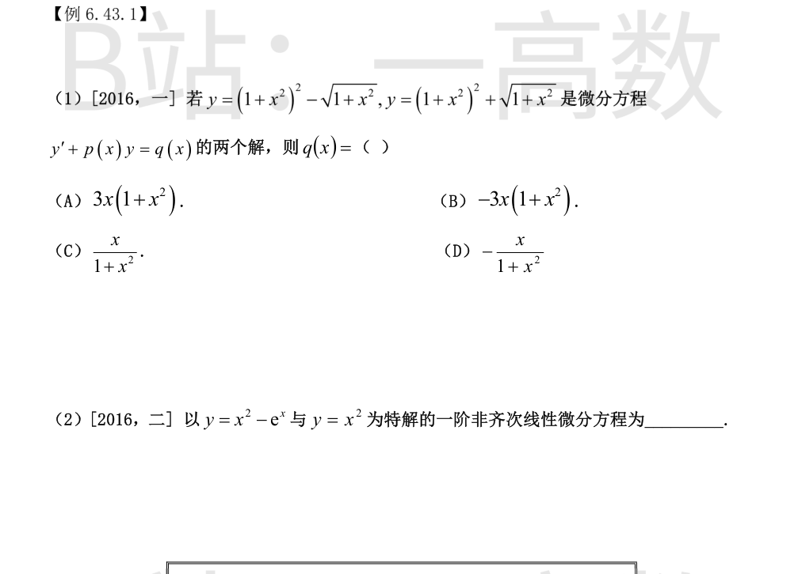
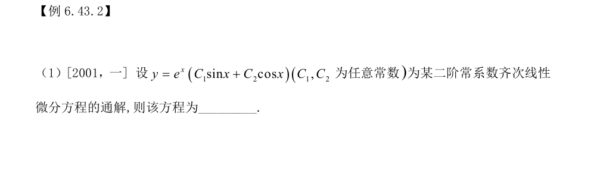
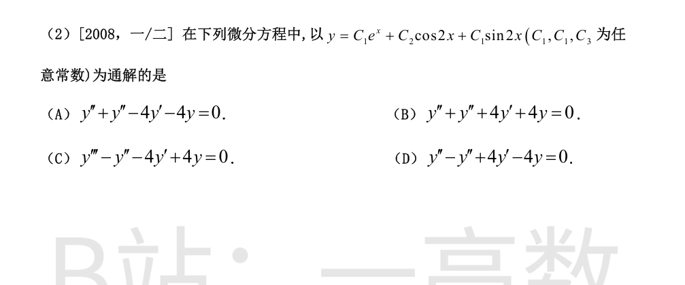
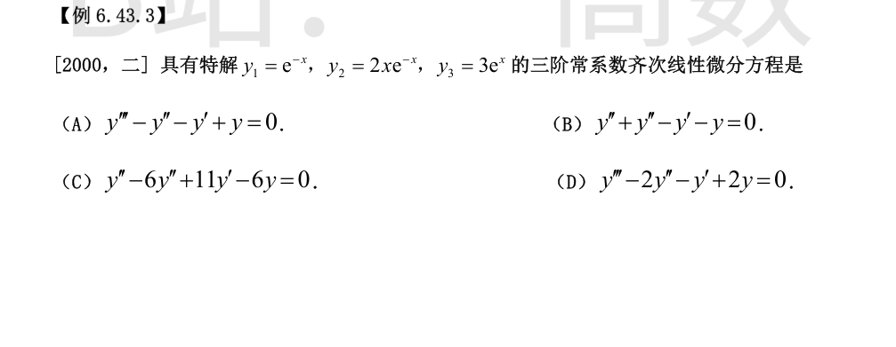
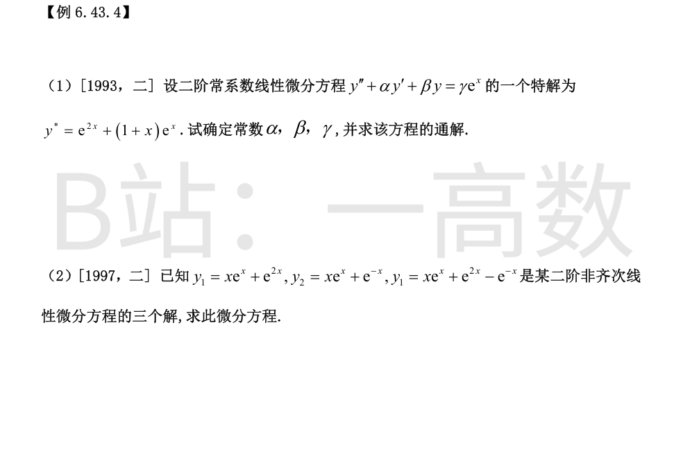

两解之差 $y_2-y_1=2\sqrt{1+x^2}$ 是对应齐次方程 $y'+p(x)y=0$ 的解。记 $w=\sqrt{1+x^2}$：$w'+pw=0\Rightarrow p=-\dfrac{w'}{w}=-\dfrac{x}{1+x^2}$。
两解的平均 $y_p=\dfrac{y_1+y_2}2=(1+x^2)^2$ 是非齐次特解：
$$q=y_p'+py_p=4x(1+x^2)-\frac{x}{1+x^2}\cdot(1+x^2)^2=4x(1+x^2)-x(1+x^2)=3x(1+x^2)$$
选 A。
两特解之差 $e^x$ 是对应齐次方程 $y'+p(x)y=0$ 的解：$e^x+p(x)e^x=0\Rightarrow p(x)=-1$，方程形如 $y'-y=q(x)$。以 $y=x^2$ 代入：$q=2x-x^2$。
$$y'-y=2x-x^2$$
验证 $y=x^2-e^x$：$2x-e^x-(x^2-e^x)=2x-x^2$，一致。


通解含 $e^x\sin x,\ e^x\cos x\Rightarrow$ 特征根为共轭复根 $r=1\pm i$，特征方程 $(r-1)^2+1=r^2-2r+2=0$，故方程为
$$y''-2y'+2y=0$$
通解含 $e^x,\ \cos2x,\ \sin2x\Rightarrow$ 特征根 $r_1=1,\ r_{2,3}=\pm2i$，特征方程
$$(r-1)(r^2+4)=r^3-r^2+4r-4=0$$
对应 $y'''-y''+4y'-4y=0$，选 D。

$e^{-x}$ 与 $xe^{-x}$ 都是解 $\Rightarrow r=-1$ 为（至少）二重根；$e^x$ 是解 $\Rightarrow r=1$。三阶方程特征根恰为 $-1,-1,1$：
$$(r+1)^2(r-1)=(r^2+2r+1)(r-1)=r^3+r^2-r-1=0$$
对应 $y'''+y''-y'-y=0$，选 B。

把 $y^*=e^{2x}+(1+x)e^x$ 代入方程：
$$y^{*\prime}=2e^{2x}+(2+x)e^x,\qquad y^{*\prime\prime}=4e^{2x}+(3+x)e^x$$
$$\left[4+2\alpha+\beta\right]e^{2x}+\left[3+2\alpha+\beta+(1+\alpha+\beta)x\right]e^x=\gamma e^x$$
比较系数：
$$4+2\alpha+\beta=0,\qquad 1+\alpha+\beta=0\Rightarrow\alpha=-3,\ \beta=2$$
$$\gamma=3+2\alpha+\beta=3-6+2=-1$$
方程为 $y''-3y'+2y=-e^x$，特征根 $r=1,2$，通解
$$y=C_1e^x+C_2e^{2x}+e^{2x}+(1+x)e^x=C_1e^x+C_2e^{2x}+xe^x$$
（$e^{2x}$ 与 $e^x$ 两项并入齐次部分。）
解之差为齐次解：$y_1-y_3=e^{-x}$；$y_1-y_2=e^{2x}-e^{-x}$，故 $(e^{2x}-e^{-x})+e^{-x}=e^{2x}$ 也是齐次解。于是特征根为 $r=-1,\ 2$，特征方程 $(r+1)(r-2)=r^2-r-2=0$，方程形如
$$y''-y'-2y=f(x)$$
$y_1-e^{2x}=xe^x$ 是非齐次的特解：
$$f=(xe^x)''-(xe^x)'-2xe^x=(2+x)e^x-(1+x)e^x-2xe^x=(1-2x)e^x$$
$$y''-y'-2y=(1-2x)e^x$$
【仲裁修正】独立校验发现分歧，经仲裁重解，以本答案为准：由解之差得齐次特征根 -1、2，特解 y*=xe^x，代入得 (x+2-x-1-2x)e^x=(1-2x)e^x（1997 数二原题答案）；A 的 -xe^x 计算有误